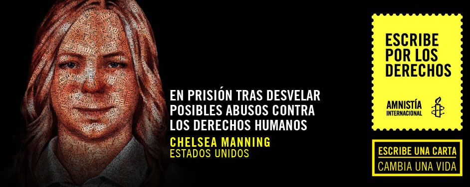

<script src="transfer.js"></script>
<section>
    <div class="banner">
        <div class="wrap">
            <figure>
                
            </figure>
        </div>
    </div>
    <div class="wrap big">
        <article>
            <div class="wrap">
                <h2 class="tleft">Tus palabras pueden cambiar la vida de 
                    Chelsea Manning:</h2>
                <div class="cont_left">
                    <p>
                        La soldado del ejército estadounidense Chelsea Manning fue condenada a 35 años de prisión el 21 de agosto de 2013, tras filtrar material clasificado del gobierno de Estados Unidos al sitio web Wikileaks. Algunos documentos señalaban posibles violaciones de derechos humanos y vulneraciones del derecho humanitario por parte de tropas estadounidenses en el extranjero, así como de fuerzas afganas e iraquíes que actúan junto con el ejército estadounidense y de la CIA.
                    </p>
                    <p>
                        Chelsea dice que intentaba provocar un debate significativo sobre los costos de la guerra y sensibilizar sobre la conducta de los militares estadounidenses en Irak y Afganistán. Pero no se le permitió decir como parte de su defensa que actuaba en interés público. Es más, se presentaron en su contra otros cargos innecesarios, como “ayudar al enemigo”. Estos cargos parecían ser un intento de disuadir a quienes en el futuro intenten desvelar conductas incorrectas del gobierno.
                    </p>
                    <p>
                        Mientras estaba en espera de juicio, Chelsea estuvo recluida durante tres años, y pasó once meses en condiciones que un experto en tortura de la ONU calificó de “crueles e inhumanas”. Una de ellas fue estar confinada durante 23 horas al día en una celda pequeña sin ventanas al exterior.
                    </p>
                    <p>
                        Tu carta se unirá a miles más que enviaremos al presidente de Estados Unidos, Barack Obama, para pedir:
                    </p>
                    <ul>
                        <li>
                            Libertad inmediata para Chelsea Manning
                        </li>
                        <li>
                            Garantías de una investigación inmediata y efectiva sobre casos sacados a la luz pública por abusos graves
                        </li>
                        <li>
                            Protección para quienes revelen información que la opinión pública tiene derecho a saber.
                        </li>
                    </ul>
                </div>
                <div class="cont_right">
                    <iframe src="formulario.html" seamless="seamless" scrolling="no" frameborder="0" style="border:0; overflow:hidden;" width="100%" height="600"></iframe>
                </div>
                <div class="clear"></div>
            </div>
        </article>
    </div>
    <div class="yellow"></div>
</section>